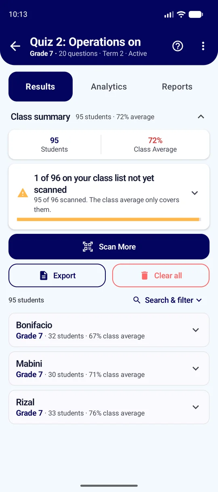
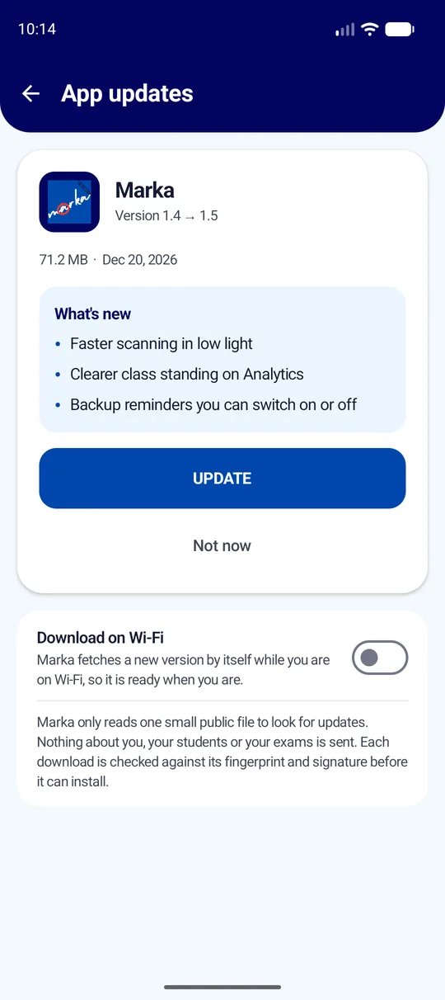

Scan with your school's layout
Print the answer sheet once, photograph each filled one, and Marka reads it — no special scanner needed.
For Filipino teachers
Marka is an offline written-assessment companion. Scan answer sheets, let Marka flag the doubtful entries, and see every score land on the right student.
Organise exams by subject, import your class roster and scan answer sheets using your school's layout. More than a scanner, Marka keeps a continuing record of student performance — so a term's work is never trapped on one phone.
What you get
Print the answer sheet once, photograph each filled one, and Marka reads it — no special scanner needed.
Faint marks and double shading are held for a quick check. Nothing is saved until you settle each one.
Import your roster once. Marka matches each sheet to its student and shows who is still missing.
See results by student or class, spot the questions most of the class missed, and track mastery of embedded DepEd MELCs.
Produce individual, class and school reports — or let Marka fill the Excel forms you already use.
Backup management, restoration guidance and password-protected exports keep your records safe.
A look inside
Real screens from Marka, shown with sample data.

How it works
Add each class and its students once, or import your roster.
Choose the questions and answer choices, then set the answer key.
Print the answer sheets, then photograph each filled one.
Scores, hard questions and reports appear as you scan.
Download
This website is the official place to download Marka. The file is signed with the Marka release key, and its fingerprint is published below so you can check it.
Download MarkaAfter downloading, the fingerprint of the file should be exactly:
Loading…
On a computer: shasum -a 256 Marka.apk. On a phone, any "file hash" app will do.
Android may warn that the file "can harm your device". That is the standard message for any app that does not come from Google Play. Marka keeps your records only on your phone.

Stays up to date
Once Marka is installed you never need to come back here to update it.
Marka only reads one small public file to look for updates. Nothing about you, your students or your exams is ever sent.
Release notes
Loading release notes…
Questions
No. Scanning, grading, results and reports all work offline. The internet is only used to look for app updates and DepEd content updates when your phone happens to be online.
On your phone. Exams, students and results belong to you and stay on the device. Use backups and password-protected exports to keep a copy somewhere safe.
Only install apps from sources you trust. This is the official Marka site, the file is signed with the Marka release key, and you can check its SHA-256 fingerprint in the Download section. Marka will also only accept an update that is signed with the same key.
Android 8.0 or newer, with a working camera.
Open Settings → App updates. You will also see an "Update available" banner on the home screen. Tap Update, then Install.
See how to delete your account. In the app, Settings can also clear all data on the phone.